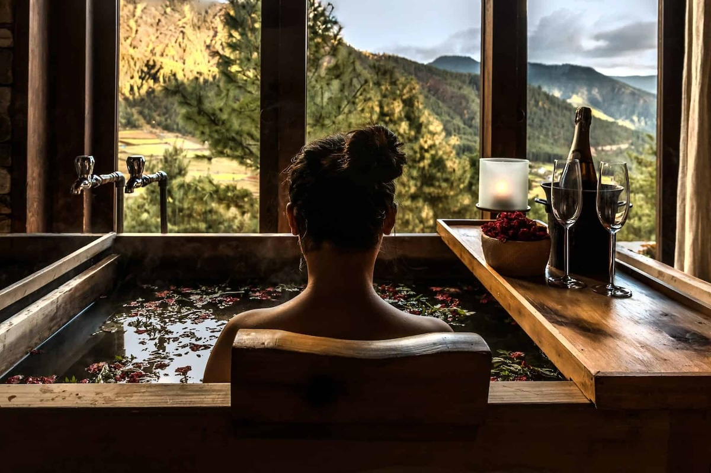
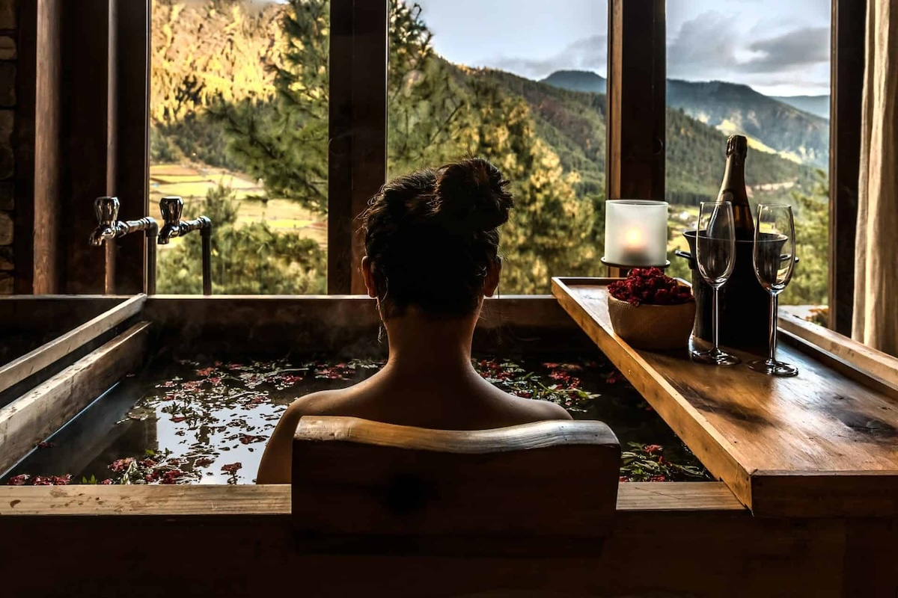

Wellness Retreats
Deeply restorative, personalized healing experiences that nourish the mind, body, and spirit.
Retreat Themes & Audiences
Our themed retreats are curated with intention to meet your unique spiritual, emotional, and physical needs.
- Zodiac-Based Retreats: Elemental menus & treatments aligned with your astrological sign
- Numerology Retreats: Life path-based schedules and personalized food and therapy
- Personality Archetype Retreats: Healing tailored to MBTI, Enneagram, and temperament
- Single Parent Retreats: Self-worth support, bonding workshops, childcare included
- Pet Owner Retreats: Pet-friendly spaces with animal-assisted therapies
- Health Tribes: Support for chronic illness, hormonal health, or fertility with custom herbs and food
- Men’s/Women’s Retreats: Gender-based healing, energy work, rites of passage
- Creative Spirit / Detox Tribe: For artists, empaths, and those needing emotional reset
Core Retreat Formats
- 6-Hour Signature Retreats: Local, includes acupuncture, detox, culinary medicine, spa therapies
- 3-Day Domestic Retreats: Hosted at estates or resorts with immersive programming and healing workshops
- 7–10 Day International Retreats: Deep detox and spiritual renewal in destinations like the Caribbean, Central America, and the Middle East
What to Expect
Each retreat is designed with attention to safety, culture, and clinical excellence:
- Vetted global locations and calendars
- Expert practitioners (TCM, yoga, herbalism, trauma therapy)
- Medical emergency plans at every site
- Visual marketing tailored to each retreat audience
- Flexible payment plans and early bird specials
- Post-retreat care kits and feedback follow-ups
Whether you’re seeking to detox, reconnect spiritually, or heal alongside a supportive community—we invite you to join us in a transformative experience unlike any other.